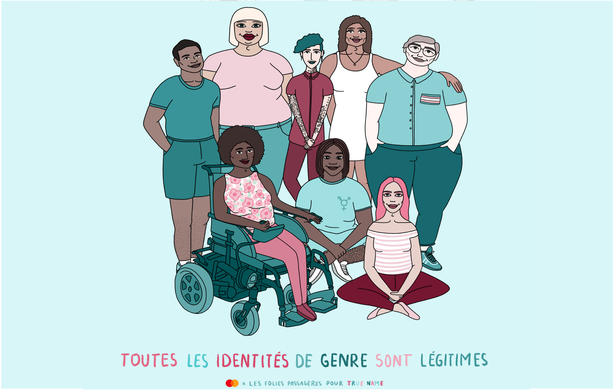

Culture
Ici, tu pourras retrouver une petite sélection de personnalités en tout genre, prônant des valeurs militantes à travers leur art. Chanteur.ses., illustrateur.trices, influenceur.seuses, acteur.trices...chacun.e veut faire bouger les choses à sa manière, alors, fais de même ! :)
@lesfoliespassageres
Consentement sexuel, masturbation, grosso-phobie, homophobie ou encore brutalité policière, avec Les folies passagères, Maude, autrice et illustratrice québécoise queer et son binôme Bonnie Braun, militante queer française et autrice, ne se privent d’aborder aucun sujet. Les folies passagères c’est la maison d’édition indépendante féministe que les deux créatives ont décidé de lancer en janvier 2019 afin de permettre aux personnes marginalisées de voir leurs œuvres publiées. Mais c’est aussi ce compte Instagram où vous pouvez retrouver toutes leurs illustrations.
Niki de Saint Phalle
Niki de Saint-Phalle, dans sa vie comme dans son oeuvre, défie un ordre établi qu’elle trouve injuste pour la femme. En 1961, la série des «Tirs», où l’artiste tire à la carabine sur des poches de peinture, agit comme une libération. Avec violence, Niki de Saint-Phalle illustre une femme au pouvoir, en contraste avec une division des tâches où le tir et plus généralement la puissance est l’apanage du masculin. Son pari des tirs est un succès : elle marque les esprits et intègre le groupe des Nouveaux Réalistes, dont elle est la seule figure féminine. Elle passe ensuite de la colère à l’engagement, et explore le «devenir femme»: elle représente des mariées, des prostituées, des accouchements, et joue sur l’ambivalence entre asservissement et puissance créatrice. Enfin épanouie, l’aboutissement de sa réflexion autour du féminin est incarné par la série des «Nanas», créées à la gloire de la femme moderne, dont les couleurs et les mouvements évoquent la liberté, la taille, la puissance…